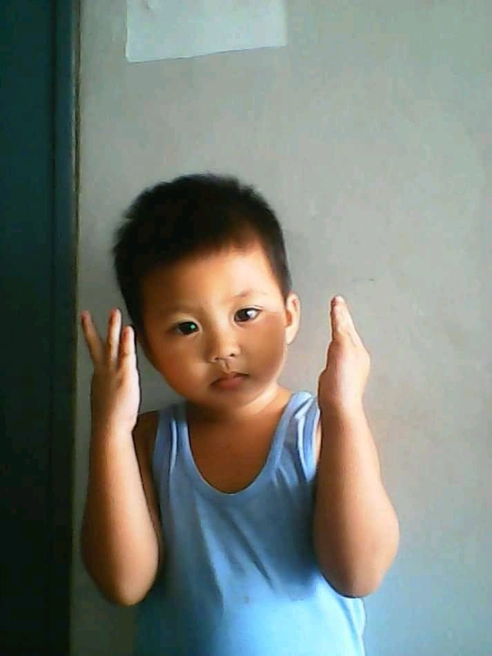
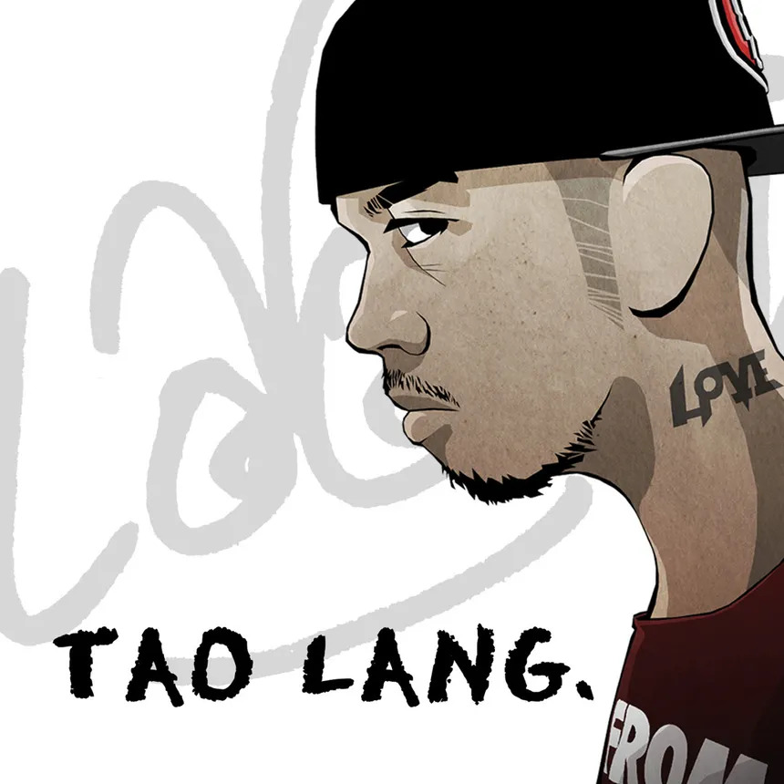
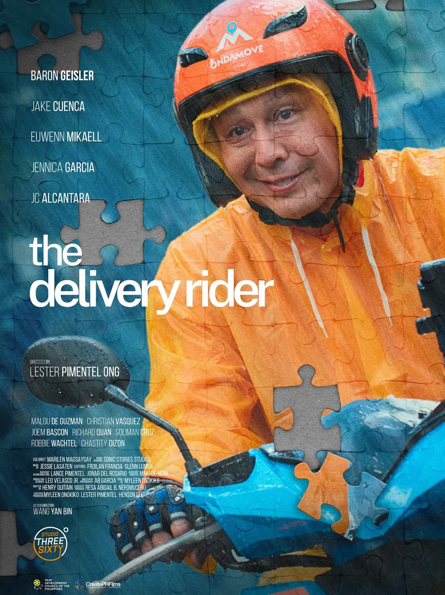
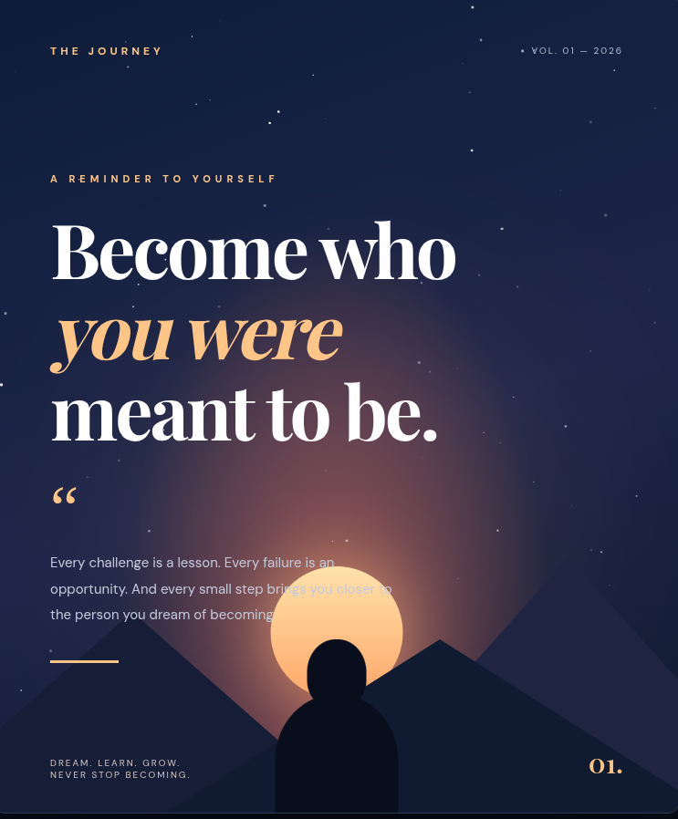

Hello everyone
THIS
IS ME!
MY STORY • MY JOURNEY • MY GROWTH

01 / INTRODUCTION
Getting to
Know Me.
WHO AM I?
My Quote in life:
"Libreng mangarap, pero magastos mabigo" - Batas from fliptop
In english, "Dreaming is free, but failing is expensive". This Quote reminds me that I can dream for free. However, if I fail, I would lose the time and efforts I invested.
MY INTERESTS & HOBBIES
It was actually unexpected back then, because the primary reason why i coded during that time was because I kept losing in Rules Of Survival and CS:GO... I wanted to make a cheat code, so I could dominate them and win every round. I never anticipated that this thing would forever be my hobby.
Now that I am old enough, I have learned several approaches to applying programming to my other interests. For example, I can apply math and programming to art. I can use vectors, trigonometry, multivariable calculus, and sine and cosine functions to make 2D or 3D spaces. Instead of manually painting everything, I can use these to create artwork.
SOMETHING INTERESTING ABOUT ME
02 / REFLECTION
Lessons Worth
Remembering.
Five lessons that made a difference.
These lessons can help me in real-life situations by allowing me to become a more responsible and critical thinker. For example, when I encounter information on social media, I should verify its credibility before sharing it. When faced with arguments or misunderstandings, I should think carefully before responding emotionally. This will help me avoid unnecessary conflicts, make better decisions, and become more responsible for my words and actions.
I believe these lessons can help me become a more understanding and responsible person. They remind me that everyone has their own perspectives and deserves to be heard. In real-life situations, I can apply these values by respecting others, being fair in my judgments, and recognizing when someone's rights are being violated. After all, a peaceful society begins with individuals who understand the importance of respecting one another.
I can apply these concepts when creating digital art, animations, and visual designs. They can help me understand shapes, proportions, rotations, and movements, allowing me to combine mathematics and programming to create more complex and creative artwork
I can use the knowledge gained from this lesson to strengthen my ability to recognize patterns, analyze problems, and make logical decisions. These skills are useful in everyday problem-solving, especially when dealing with situations that require careful calculations and reasoning.
I can apply this by becoming more open-minded and understanding toward others. It reminds me that people have different experiences and ways of seeing the world, which helps me avoid making quick judgments and become more considerate of others.
03 / PERSONAL GROWTH
Behind the
Struggles.
Growth begins when we learn to face challenges.
THE CHALLENGE
HOW I HANDLED IT
WHAT I LEARNED
04 / PERSONAL PICKS
My Favorite
Things.
Little things that make life meaningful.

FAVORITE SONG
Sometimes we question our life. "Bakit si ganto ganyan, bakit ako wala, bakit sila meron". Without realizing that we spend most of our time comparing ourself to others.
In life, making mistake is normal. However, when we see someone who seems perfect in our eyes, we tend to compare ourselves to them "Na bakit siya kaya niya? bakit ako hind", and walang masamang magkamali at wala ring masama kung you're incapable of doing specific thing that others can. We are unique on our own ways. Humans have different strengths, weaknesses, experiences, and capabilities.
Being different doesn't make us inferior; it makes us human.

MOVIE
Furthermore, the movie demonstrates the hardships and sacrifices of delivery riders in the Philippines. It gives us a glimpse of how difficult their jobs can be, especially when they have to work long hours, face different challenges, and endure difficult situations just to provide for their needs and families. I find this inspiring because it reminds us to appreciate their hard work and never underestimate people based on their circumstances. Ultimately, the movie teaches us about independence, perseverance, and the importance of respecting people who work hard despite the challenges they face.
05 / WORDS OF WISDOM
Advice Corner.
Words I would share with my fellow students.
06 / A LETTER THROUGH TIME
Dear Future Me,
Five years from now. A different chapter, the same story.
NOVEMBER 2026
I hope that by the time you read this letter, you are doing well and living a life that you once dreamed of. Five years from now, you will be 21 years old, and I wonder how much you have changed since the day you wrote this.
As of today, I am a Grade 10 student with big dreams and ambitions. I aspire to become a successful software engineer, graduate from a good university, preferably the University of Santo Tomas, and build a career in the field of technology. I want to create meaningful projects, develop my programming skills, and become someone who can use technology to make people's lives easier.
However, my dreams go beyond academics and career achievements. I want to become a better person, someone who is disciplined, emotionally mature, confident, and capable of handling life's challenges. I hope you have learned to communicate better, built meaningful friendships, strengthened your relationship with God, and become someone your family can always depend on.
There are also things I hope you have achieved by now. I hope you have graduated from senior high school, entered your dream university, developed your programming portfolio, and gained valuable experiences along the way. More importantly, I hope you have enjoyed your youth, explored new opportunities, and created memories that you will cherish for the rest of your life.
But above everything else, I want you to remember one thing: Never forget where you started. Remember the younger version of yourself who had countless dreams, doubts, and uncertainties but still chose to keep moving forward. Do not let success make you arrogant, and do not let failure make you question your worth. Life is not a race, and there is no need to compare your journey with someone else's.
I know that the road ahead will not always be easy, but I hope you never lose the determination to improve yourself. Whatever your circumstances may be five years from now, I hope you can proudly say that you gave your best.
Keep your faith, stay humble, appreciate the people around you, and never stop learning.
Sincerely,
Your 16-year-old self,
Angelo
07 / CREATIVE CORNER
Let Creativity
Speak.
A space for your imagination and expression.

08THE FINAL CHAPTER
My Final
Words.
THIS TERM TAUGHT ME THAT...
ONE THING I AM PROUD OF...
ONE THING I WOULD CHANGE...
MY MESSAGE TO MY FUTURE SELF...